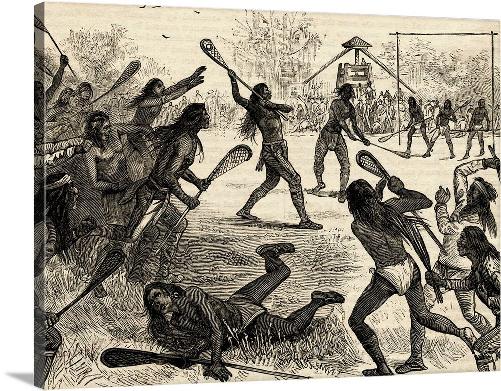

Lacrosse boasts a rich history dating back to the indigenous communities of North America. This website chronicles the evolution of the sport, from its early roots as a spiritual and social activity to its modern form as a competitive athletic pursuit. Explore the diverse styles of play used throughout history, delve into the equipment transformations, and learn about the influential figures who shaped the game we know today. Witness the fascinating journey of lacrosse as it transitioned from a cultural tradition to a globally recognized sport, fostering athletic excellence and community spirit.
Don't you just love nature:)
Decoding the Game: The Rules and Strategies of Lacrosse
Lacrosse may appear fast-paced and chaotic to the untrained eye, but a complex web of rules and strategies governs the game. This website provides a comprehensive breakdown of lacrosse rules, from basic fouls and face-offs to advanced positioning and penalty structures. Additionally, explore the various offensive and defensive strategies employed at different levels of play. Gain a deeper understanding of the game and appreciate the strategic brilliance exhibited by top lacrosse teams. By mastering the intricacies of the rules and deciphering the complex strategies, you'll gain a newfound appreciation for the tactical depth and intellectual challenge presented by lacrosse.
Mastering the Art of Lacrosse: Skills and Techniques
Lacrosse demands a unique blend of athleticism, coordination, and stickhandling prowess. This website serves as your personal guide to mastering the art of lacrosse. Discover instructional content covering essential skills like cradling, passing, shooting, and footwork. Explore drills and exercises tailored to improve specific skills for attack, midfield, and defense positions. Whether you're a beginner building a foundation or an experienced player seeking to refine your technique, this website offers valuable resources to elevate your game. Through dedicated practice and learning from these resources, you'll develop the necessary skills to navigate the field with confidence and contribute significantly to your team's success.
The World of Lacrosse: Beyond the Field
Lacrosse extends far beyond the boundaries of the playing field. This website delves into the broader world of lacrosse, exploring its cultural significance, impact on communities, and professional leagues. Discover the various governing bodies that oversee the sport at different levels. Learn about the prestigious collegiate lacrosse programs and the professional leagues pushing the boundaries of the game. Gain a deeper appreciation for the global reach and passionate fanbase that make lacrosse a truly unique sport. Explore how lacrosse fosters teamwork, sportsmanship, and a strong sense of community, enriching the lives of players and spectators alike.
Lacrosse has been growing in popularity in many countries around the world, including Australia, Asia, and Europe.
The first ever Lacrosse World Championship was held in 1967! This international competition highlights the growing interest in the sport beyond its traditional strongholds in North America.
It will be included in the 2028 Olympic Games held in Los Angeles, California, USA. This marks the first time lacrosse will be part of the Olympics since 1904 and 1908.
A lacrosse goalie can't use their hands to catch the ball, only their stick!
Traditionally, the Northeast and Mid-Atlantic regions of the United States have been known for having the most competitive, high-level lacrosse players, particularly for boys lacrosse. This area boasts a long history with the sport, strong youth programs, and numerous top-ranked high school and collegiate teams. Places like Long Island, New York, Maryland, and Massachusetts are particularly renowned for their lacrosse talent.
Lacrosse Equipment Variations
Lacrosse sticks come in different variations depending on the position a player is on the field. Attack players typically use a shorter stick (30-42 inches) with a wider pocket to aid in catching and throwing. Midfielders use a similar length stick but with a slightly narrower pocket for both offense and defense. Defense players wield the longest sticks (52-72 inches) with a narrow pocket designed primarily for ground ball control and checking (striking an opponent's stick to dislodge the ball). Goalies have a uniquely designed stick with a large mesh pocket to block incoming shots.
The Sport and Native American Communities
While the exact origins of lacrosse remain unclear, archaeological evidence suggests a long history of the sport among various indigenous communities in North America. Traditionally, lacrosse was played not just for recreation but also for cultural, spiritual, and social purposes. It served as a way to settle disputes between tribes, train warriors, and give thanks to the Creator. The influence of these early versions of the game can still be seen in some contemporary lacrosse traditions.

More Cool Facts!
There are several variations of lacrosse played today. Field lacrosse, the most common version, features ten players per side on a large field. Box lacrosse is a faster-paced indoor game played on a hockey rink with six players per team. Additionally, women's lacrosse differs from the men's game in terms of equipment and rules.
Lacrosse is increasingly being incorporated into physical education programs due to its emphasis on teamwork, athleticism, and hand-eye coordination. Native American tribes are also using lacrosse as a tool to teach cultural traditions and values to younger generations.
Lacrosse comes in two forms, men's and women's, with key distinctions. Men's lacrosse allows for more physical contact and features deeper pockets in the sticks to carry the ball. Women's lacrosse emphasizes passing and agility due to shallower pockets and rules against body checking. Both require teamwork and athleticism, but differ in the equipment used, the number of players on the field, and the overall physicality of the game.